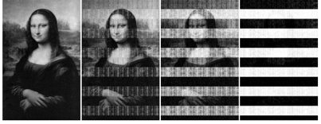
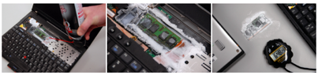

RAM sta per Random Access Memory, vale a dire quella
memoria estremamente veloce utilizzata dai sistemi operativi e dalle
applicazioni per fornire dei valori al processore.
La RAM è la memoria più veloce presente
in un computer questo perchè non si preoccupa di ordinare i dati al suo interno
ma solo di allocarli temporaneamente nel computer; al termine dell'utilizzo del
computer, la memoria RAM perderà tutti i suoi dati.
Nella RAM è possibile trovare file temporenei poicheè vengono salvati qui.
Nell'informatica La tipologia di RAM eè la DRAM.Questa memoria a differenza delle SRAM ha
l'abilita di ripulire i settori in breve tempo e quindi di aggiungere nuboi elementi.
All'interno delle DRAM ci sono sooto livelli chiamate DDR.Ad oggi si è arrivati alle DDR4.
Come gia detto,
quando un computer si spegne la sua memoria RAM viene eliminata.
La domanda e come viene eliminata?
Quella che segue è una ricerca condotta nel 2008,dei ricercatori hanno presentato come sia possibile
effetuare un'estrazione dei dati in memoria RAM anche a distanza di qualche minuto.
Secondo la ricerca,le DRAM non si cancellano subito,dando il tempo a chiunque acquisizioni di natura forense.
Tale tecnica è stata dimostrata effettuando con successo utilizando software di criptazione più
famosi nell'informatica(tra cui BitLocker, TrueCrypt e FileVault).Nella ricerca emerege che in ambiente OSX
sia stato possibile recuperare login e password.

Ecco come si presenta la degradazione di un'immagine in una memoria RAM. Nell'ordine
da sinistra verso destra: 5 secondi, 30 secondi, 60 secondi e 5 minuti.
Il seguente metodo non verrà spiegato poichè ichiede oltre le conoscenza di reversing avanzate,
anxche la distruzione delle memoria RAM. Vi basti pensare che questa tecnica consiste nello spruzzare un
nebulizzatore che lo porterà a -50°C,in questo modo i dati si "freezerrano" pert diversi minuti finchè
non rimarra energia statica all'interno di essa.
